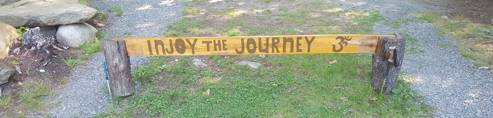
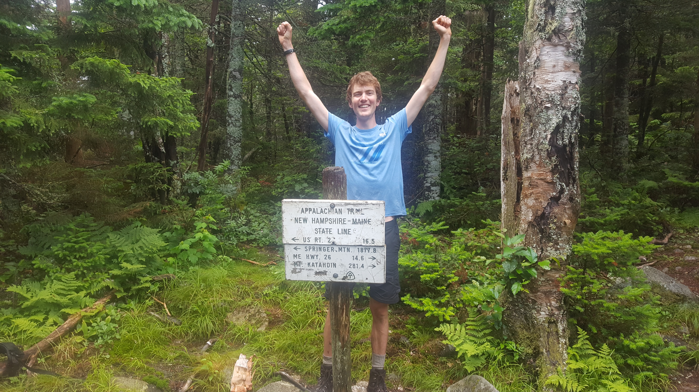
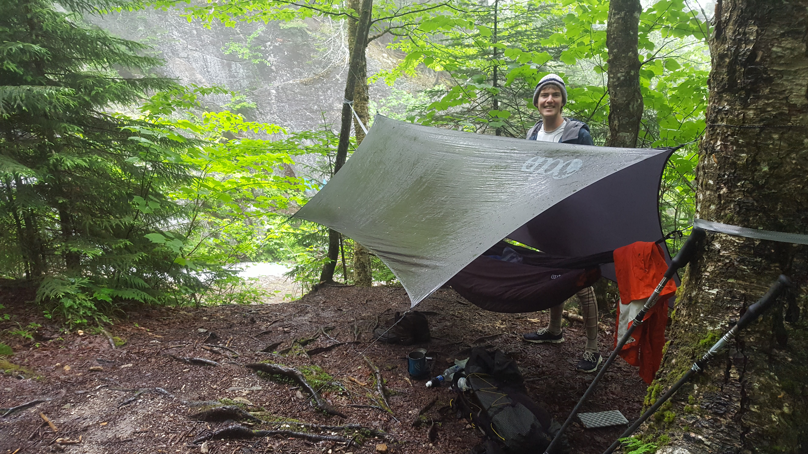
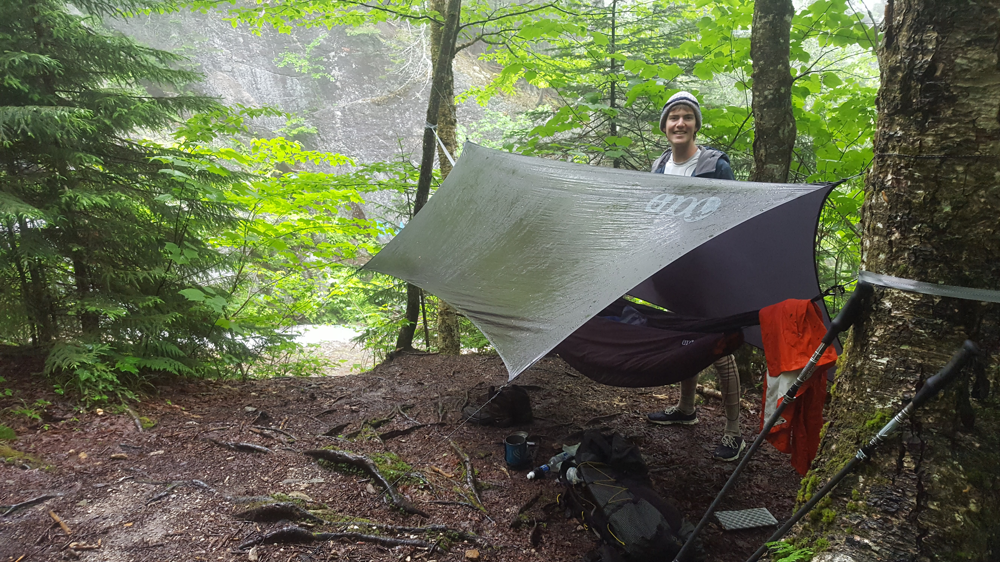
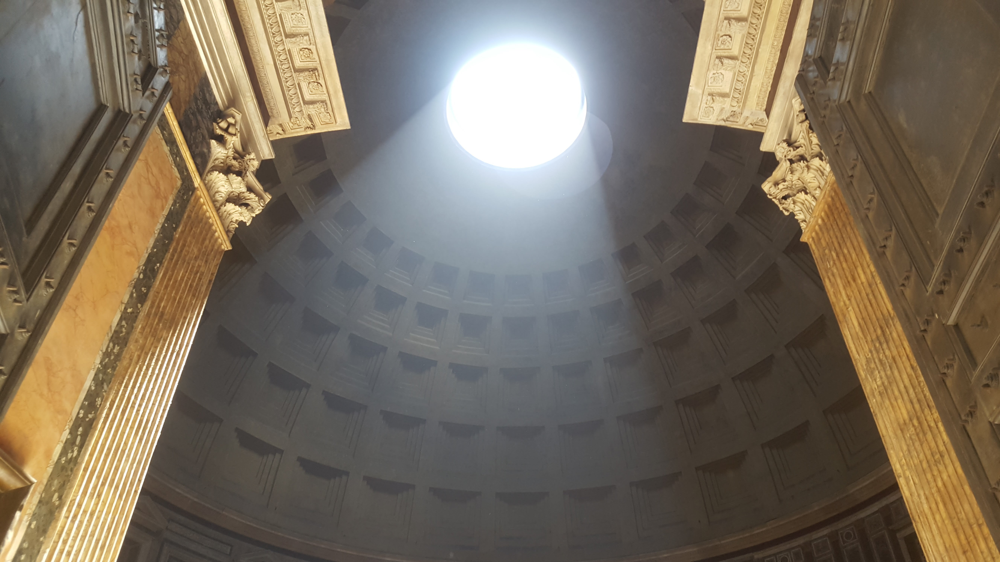
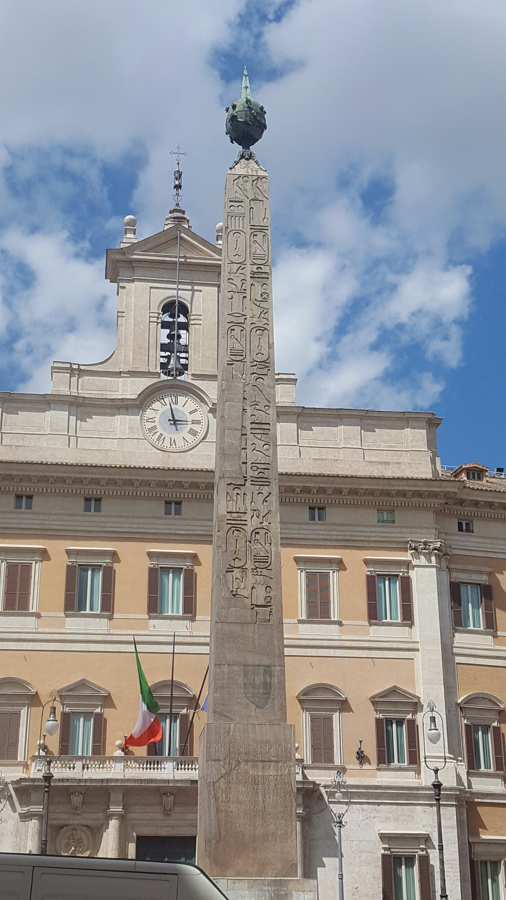
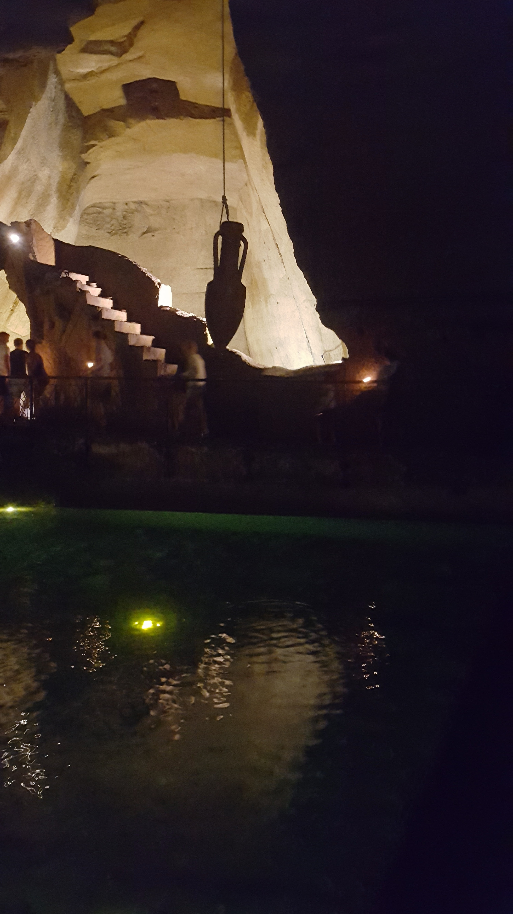
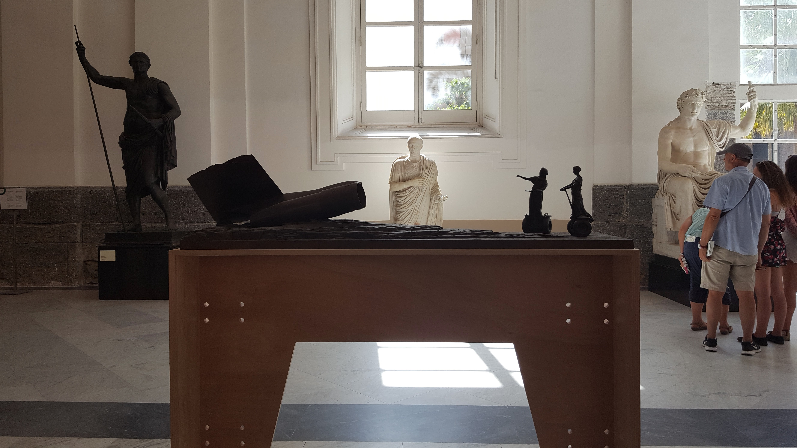
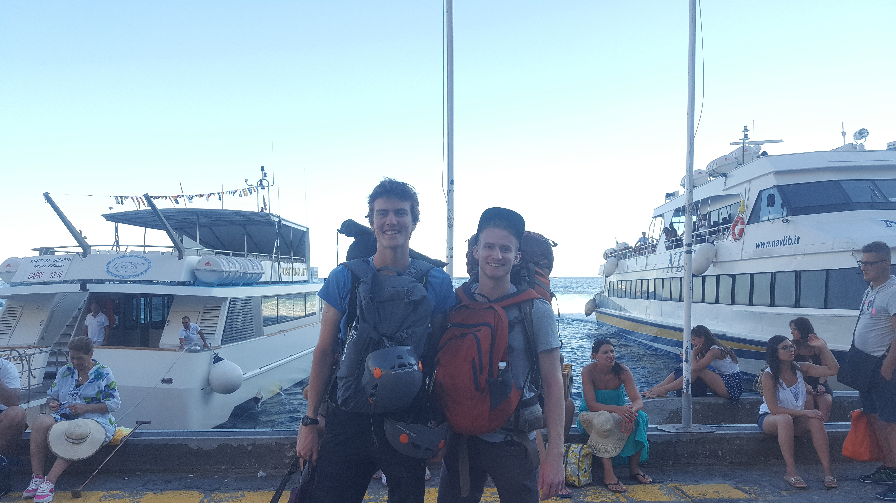
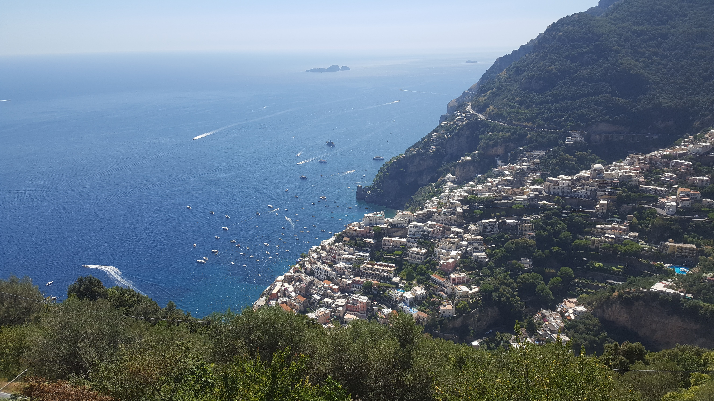

My travels between graduation and my first job
I was fortunate enough to have about 7 months to travel. This is how I spent it.
The Appalachian Trail: 5 weeks
I hiked 380 miles from Mount Katahdin at the northernmost point of the trail
to Lincoln, New Hampshire. Right after the Whites.

I thoroughly enjoyed hiking on the AT.
I started in the middle of the southbound "bubble", when most of the southbound
thru-hikers started. Ryan, my friend since we were small children,
joined me for the first hundred miles of the trail. The "bubble" of southbound
hikers formed a moving community. You always knew the hikers within a day
or so. There were logs in the shelters that people would leave messages in.
I want to go back to finish it someday, hopefully in just a few sections.

Katahdin
We summitted in some gnarly weather. To be honest, we probably shouldn't have
been up there. The rocks were wet, the rain was coming in sideways, and the
wind was gusting so strongly it nearly knocked us over multiple times. I have
very few pictures from the hike up because I was focused on not dying,
something I figured my phone could distract me from. But we did it! and we all
lived to tell the tale.
The Hundred Mile Wilderness
Abol bridge is the last piece of civilization before you plunge into the 100
mile wilderness. It's a campsite with a few cabins and a general
store about 15 miles from Katahdin and they sell pizza. That pizza
was my last real meal for 10 days and 100 miles.
Trail Names: On the trail, you don't use your real name. You are given a name
by your companions, usually when you do something really stupid. I made my
mistake the day before we started hiking, but I didn't realize it until I tried
to make dinner. Standing in the bulk food section of the grocery store, Ryan
and I were making trail mix. I saw rice while I was there, thought, "I need
rice" and put some in a bag. Continued shopping without thinking much of it.
The first time I try to cook it, I keep checking on it, to find it crunchy. 30
minutes should be enough, right? Nope. Okay I'll wait 10 more. Still crunchy?
O. Shit. IT'S NON-INSTANT RICE! Specifically, long grain brown rice. It took
more than an hour to cook and I never ate non-crunchy rice.
On my second night on the trail, we walked up to the first shelter of the 100
mile wilderness. There were quite a few people there, so I hung my hammock and
started cooking dinner. There were two hilarious guys from New York. They were
comedic geniouses who could really build off of each other. Everybody else
finished eating dinner and I was still attempting to cook my rice. The New
Yorkers cracked a joke, calling me "GrainMan" and it stuck. On the Applachian
Trail, I am known as GrainMan.
After about 5 days of crunchy undercooked rice I got lucky. Another hiker
decided she was done and bailed. She gave me the rest of her instant food
and took some trash to town for us. Thanks again, Missy!
Monson, Maine. Heaven on earth
O. My. God. Monson Maine is the best place ever. It has like 4 restaurants and
I ate at all of them! Pete's Place for breakfast (get the hiker special!).
On our last day in the 100 mile wilderness we camped about 3 miles outside of
Monson. That morning, we got up early, skipped breakfast and BOOKED IT for
town. And boy was it rewarding. When I reached the road I shouted and
celebrated. FOOD REAL FOOD SOON! So, we hitched into town and got bunks at
Shaw's. Shaw's is my favorite hostel from the AT. It had such a homey
atmosphere. Poet and Hippy Chick were so welcoming and friendly. Also, the
blueberry pancakes and bacon for breakfast were AMAZING.
So, we zero'd in Monson. Eating, sleeping, resting, gaining weight, and basking
in the glory that is a zero day. It feels so amazing to replenish your strength
after pushing yourself to exhaustion.
The Hiker Hut

The hiker hut was the most spiritually replenishing place I stayed. I was
actually planning on hitching further into town but I couldn't get a hitch.
I'm so happy I chose to walk to The Hiker Hut because it was so relaxed
and welcoming. I showered outdoors with heated (!) water from the river.
We sat around the campfire and ate popcorn. The people there were communal
and happy :)
The Mahoosucks (sp?)
I don't care how you're actually supposed to spell that mountain range because
it SUCKED. This is the last mountain range in Maine before you cross into New
Hampshire. It was rainy and the trail decided to go directly up granite slabs.
No switchbacks, just straight up a slick slab of rock with a moderately heavy
pack on your back. I surely fell a few times. The mahoosuck notch is known as
the most difficult (and possibly most fun) mile of the trail.
The notch is basically a boulder field. You have to squeeze through, climb
over, and climb under rocks. It was surely not fun for me. Mostly because I'm
an idiot who chose to hike it in the rain, alone, and right at dusk. Multiple
times I thought it was over and I would be done, but the trail plunged right
back down into that rocky ravine.
Crossing into New Hampshire

The Whites
Everyone warned me about the whites. They said it would be cold. They said it
would be difficult and rocky. They said the exposed peaks would be dangerous.
It really wasn't that bad. Surely easier than the 100 mile wilderness. You want
to know why? It's simple. I could buy a bowl of soup almost every day for a
dollar. There are Huts up in the whites and they will feed thru-hikers for
cheap. You can also do a "work for stay" which means you work for an hour or
two (sweeping, cleaning, etc.) and they feed you dinner and breakfast and
let you sleep on the floor!
The rewards of the grueling walk
It's the simple things. The AT teaches you how valuable the most basic things
are. Food, Warmth, Shelter. I cannot put into words the sheer joy one single
hot meal of pho was for me. That pho got me through the last two grueling
uphill miles in the rain. I knew, at the top of this hill, was a shelter
and I knew that in my bag was a dehydrated pho soup that would taste utterly
amazing. And it did! Not because the food was particularly tasty, but rather
it was exactly what my body needed.
The AT teaches you what you really need. It strips
you of anything you only want, forcing you to learn what you really need.
Anything you want is too heavy. Don't bring it.
Living in the woods was wonderful and beautiful.
 

Pacific Northwest: 2 weeks
Europe: 3 months
Italy
After hiking 380 miles on the east coast. I decided it was time to leave the
continent I was born on and start my journey around the world. I flew to
Rome where I met up with my cousin, Wes. Wes speaks Italian because he did
a foreign exchange there in high school. His language skills were extremely
helpful. Especially for my first time on a trip like this. He did most
of the planning and talking. I was along for a great ride :)
Rome
Rome is beautiful and ancient. Despite the tourists
I enjoyed walking around the ancient ruins. The pantheon was my favorite.
It's an incredibly large dome with a hole in the center. When we were there,
a circular shaft of light came through the hole and lit the interior.

Scattered throughout Rome are Egyptian obelisks. The Romans stole them
from Egypt to gloat that the Roman empire outlasted the Egyptian one.

Naples
Next, we went to Naples, the supposed birthplace of pizza. The pizza
was good but I prefer the american style, actually. Italian pizza
is wet and thin, whereas american pizza is packed with toppings.
After we got some pizza, we went on an underground tour of Naples
When Naples was a Greek city, they dug beneath the city to gather
stone to build with and to create a water resevoir. Later, the
Romans also used it as a water resevoir. In more modern times,
it became a trash dump and during WWII, it was a bomb shelter.

Also, in Naples, we went to an art museum. It had a really interesting
piece that depicted what modern Rome might have looked like if the ancient
Roman empire never fell.

Here you can see romans in togas riding segways while looking at the wreckage
of a plane crash. This was just one part of a fascinating and humorous art
installation.
Positano and The Almafi Coast
We took a boat from Naples to Capri, then from Capri to Positano. Capri
is a beautiful island just west of the Italian mainland. It's where many
millionares own a vacation home. When we arrived at the docks, we saw
lots of boats offering overpriced rides to sea caves. We looked at a map
and decided we could walk/swim/climb to a sea cave not too far away.
So, we set off on an adventure. We walked about 4km to a beach. Hid our
stuff in the rocks, and began jumping and climbing our way across
large boulders. It was very fun. At one point, we couldn't keep moving
along the rocks, so we jumped into the astoundingly blue and clear
Mediterranean to swim to the next group of rocks. After about a kilometer
and a half of moving along the coastline, we got stopped, by a sheer cliff.
We had to turn back around without reaching the sea cave. It's okay though
the journey was fun even if we didn't reach the desired destination.
After Capri, we took another boat to Positano. It's a gorgeous cliff-side
town on the Mediteranean. It's incredibly expensive though, the cheapest
hostel was about $60 per night! Luckily, things get cheaper the further up the
hill you climb, but that means more and more stairs.


To Do: La Selva
India: 1 day
Japan: 2.5 weeks
Colorado: 1 or 2 weeks?
Columbus: 1 week
Cape Canaveral: ? weeks